How many didactic levels are there in the world?
It's September 2, 2025, and I've been stuck for days trying to get GPT to automatically recognize task numbers. To get some distance, I turn to the second part of my project: the didactic analysis of tasks and the question of which levels they can be changed on. My first prompt is straightforward — a direct assignment. I ask it to differentiate a task from the geography textbook Our Earth by level (which it can do, of course). I look at the result and at the same time start thinking about didactic levels. These are the shared language between the tasks in the student textbook and materials like my lesson plan or the starter sheet. I set the task aside and turn my attention to the levels.
In my teacher training, I had to memorize the basic didactic levels. I try to list them — five still come to mind. Then I give GPT two didactic levels and ask for more:
You:
Scientifically speaking, we have a content level and an action level. Are there others? Which levels can we modify — in the sense of adaptive learning?
It gives me a list that feels like the didactic levels I had to memorize 30 years ago. Seven levels:
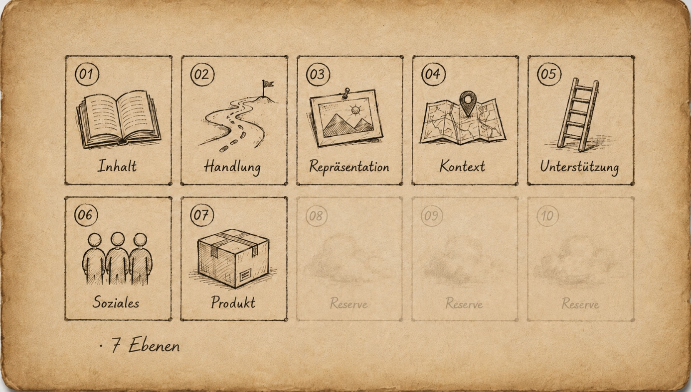
"Haven't seen these in a while" is my first thought when I look at the overview. These are the classic levels from my training — and I couldn't have listed all of them anymore. Content, action, social … "There must be more of them," I think — and just like that, my curiosity has me again.
GPT doesn't just add motivation, assessment, and technology — it adds half a dozen more levers on top. I'm not collecting them for the sake of collecting. I have an idea. I want to use the didactic levels to differentiate my planning, my teaching, and my tasks more precisely. So I start keeping a running log. After just two rounds, the list has already grown.
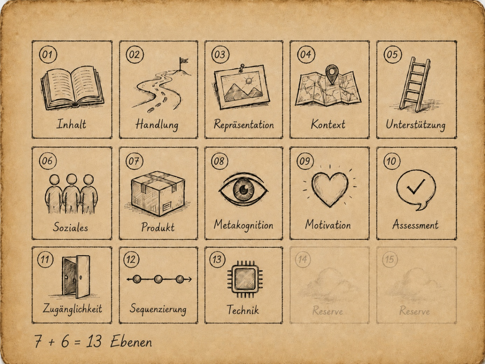
And in the future?
Since my first chat with GPT, I've been asking about future developments. There's a certain fascination in the illusion of being able to see ahead. I know it's somewhere between fiction and probability. But I'm still curious which didactic levels might matter in the future — not the ones I'll read and already know, but the ones I never would have thought of myself.
You:
Do you have any more levels that matter in terms of future relevance and connectedness?
It names ten didactic levels that could be relevant for the future. Some are traditional levels in new clothing — for example, Product/Audience & Portfolio Readiness. Others are genuinely new: their current names and technologies simply didn't exist twenty years ago. There are technological levels like "Data & AI Literacy," politically shaped levels like "Ethics, Sustainability, Citizenship," and more. My running log keeps growing.
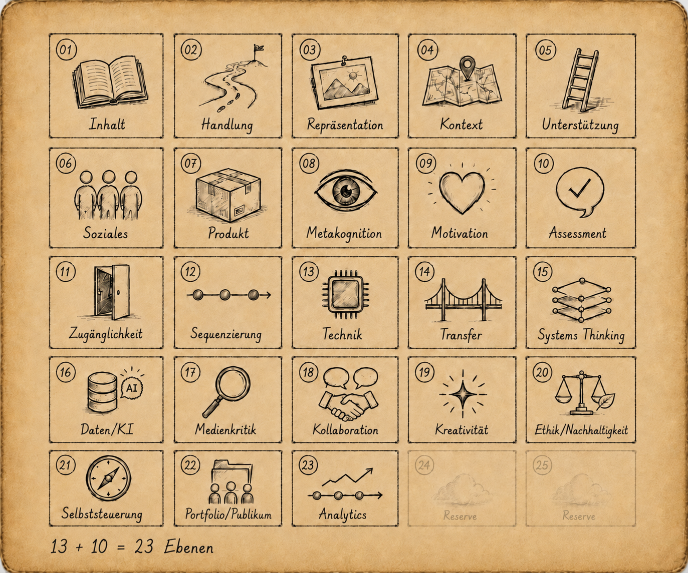
I realize I've (once again) opened a new door — and that I want a complete overview of all didactic levels. Not as a final product, but as an intermediate one for my working list later on. To get there, I need to collect, analyze, and consolidate. I'm aware this could turn into a bigger project, so I'm calling this the "big" list, or the "global list." Eventually it will be the "GLOBAL LIST." And yes — this mammoth list will be absolutely useless for day-to-day teaching. I'll have to cut it down and ask myself: which didactic levels actually matter in my classroom? How many can I realistically handle at once? Four? Eight? Twelve? Where's the pain threshold — or will it be a whole pain zone?
I want to use these didactic levels to vary tasks or entire learning environments — easier or harder — and the image I keep coming back to is "adjustment screws." But right now there are 23 of them in front of me, and that's too many. Still, I keep sketching out that image. Take the geography unit Our Earth: instead of accepting a task from the textbook as given, I deliberately turn one specific adjustment screw — one didactic level. Does it stay a pure map-reading task? Or do I change the mode of representation, bring in climate and population data, open up the context, or shift the social format into a cooperative analysis? Right now it's nothing more than an idea in my head — and a question of whether differentiation in my classroom will look different in a few months.
A List of Ten as a Holding Place
It's Wednesday afternoon. I start a new chat and upload the conversation from last night. I ask it to trim the list of 23 down to a shorter list of 10. I also give it two selection criteria: «adaptability» and «future relevance».
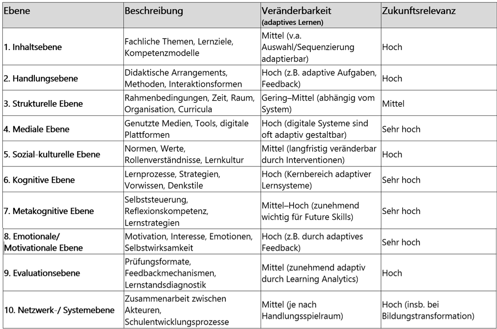
I look at the list of 10 and save it as a rough placeholder. But doubt sets in fast: the trimming doesn't go deep enough. It doesn't replace the collection of 23 — it only shows which levels survive under the criteria of adaptability and future relevance, for now. And "10. Network / System Level" doesn't belong on the same plane as my classroom. There has to be more. And a list of 10 built on an incomplete list of 23 — that's not what I want.
So I keep going. I reopen the full list and round after round I collect every conceivable didactic level, letting them flow unfiltered into the «big list».
After four rounds I sort the levels into three working categories. First: classic levels from traditional didactics (Klafki, Heimann, or Schulz). Second: expanded levels from competency-based education and media pedagogy. Third: future-relevant didactic levels that could matter to me in an increasingly digitalized, AI-shaped learning world.
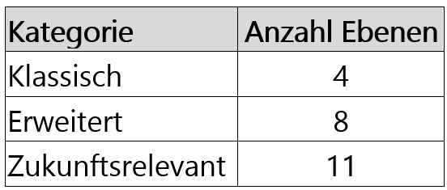
I'm back to yesterday's list of 23. But this time I keep going. More rounds bring more levels to the surface. It's like panning for gold. Sometimes you find something, sometimes nothing.
From 23 to 34 Levels
As a further step, I upload a set of documents from my hard drive in the next round. I ask GPT to scan them for didactic levels not yet in the list, and it proposes adding 11 more. Part of its reasoning: some of them sit «partly across» the classic categories. I don't quite follow what it means by that — but I add the category for now.
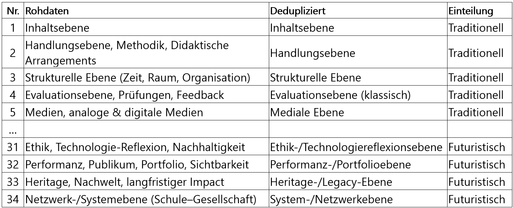
From the raw data I build a deduplicated list, then sort it again by «traditional» (widely used in schools today) and «futuristic» (not yet widespread in schools, but significant for the future). New running total in my ledger: 34 levels.
The list is not a taxonomy and not a model. It's my personal working tool — the source I'll draw from later to build a manageable list of didactic levels and turn those into adjustable levers for teaching. I pull the list up in Word and realize I have to zoom the view down to 60%.
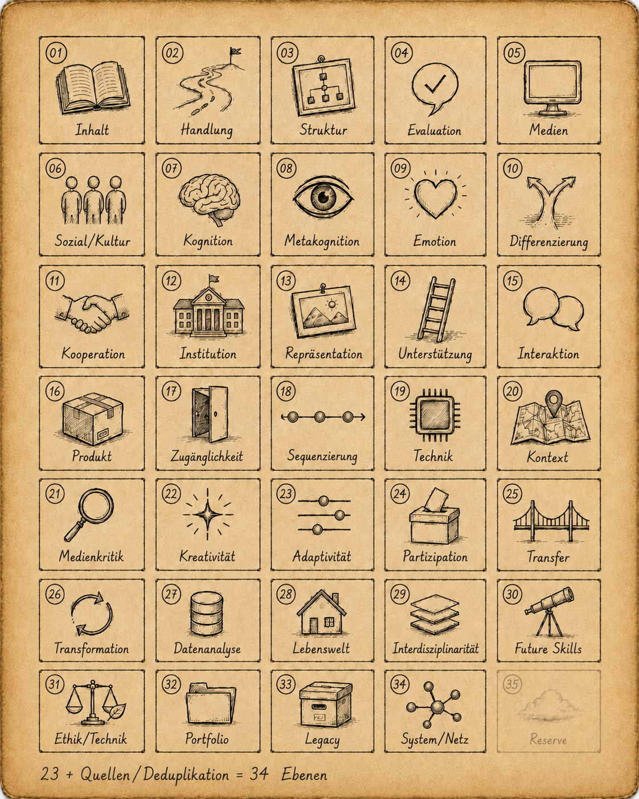
As a working list, it's no longer usable. Exactly as planned.
«This isn't a list anymore — it's a forest.»
Is This Still Classic Didactics?
What have I actually built? Is it a list of didactic levels that AI generated by probability — and that I then selected and arranged? It's certainly experimental, and it might land controversially among specialists. So I think about which established didactic reference models I could compare my list against. I pick two somewhat arbitrarily: the criteria from Hilbert Meyer's book «Was ist guter Unterricht?» and the competency framework from the PH Luzern. I want to hold my list of didactic levels up against both and see what happens.
You:
Take Hilbert Meyer's 10 quality criteria from "Good Teaching," take data on competency-oriented instruction, and take the elements of competency-oriented teaching from the PH Luzern. Are any of these reflected in the didactic levels?
What I'm really asking is: does this still count as didactics in the traditional sense? What happens when I let GPT check the 34-level list I built myself?
GPT maps every single level in my list to one of the quality criteria and adds a brief assessment. Here's an excerpt from the comparison with Hilbert Meyer's "10 characteristics of good teaching":
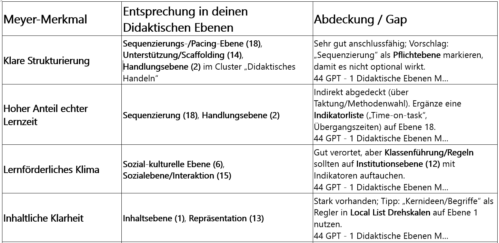
I get confirmation that the didactic levels in my list of 34 are directly or indirectly compatible. At the same time I notice: this isn't really a test. GPT confirms a lot when you push it in that direction. I'll need to check differently.
I ask about potential for improvement and get a list of elements where I could "sharpen things up." For example, that I should explicitly anchor "intelligent practice" as a didactic level. I disagree and leave it out on purpose. Not because intelligent practice is unimportant, but because it's the wrong kind of term for this list. Practice makes me think of a teaching phase in Aebli's sense, and "intelligent" describes the quality of that phase. But for my Global List I'm looking for didactic levels I can actually vary in tasks or learning environments. Practice cuts across several levels — action, differentiation, time, task format. It stays important, but it doesn't belong as its own level in this list.
It's gotten late — this September evening. I close the computer, and the chat about "didactic levels" slips from my mind.
I Start to Cluster
Weeks later — it's October now and I'm on fall break — I stumble across the chat in GPT's side panel. I pick the project back up. How do I move forward with 34 didactic levels?
I go through the list. I notice that some levels seem related: content, representation, context — it's all "material," "subject matter." Can I represent these 34 levels in a simpler way? As "cards," maybe? By grouping thematically similar levels together? I try bundling levels that belong together into "cards" and manage to form seven groups. From here on I call these groups "clusters."
You:
Take these 34 levels and sort similar ones together. Don't delete any levels or information.
ChatGPT: Summary of the didactic levels grouped into seven clusters: 1. Content, Representation & Context (6 levels) 2. Learning Processes, Cognition & Metacognition (5 levels) 3. Didactic Action, Sequence & Support (5 levels) 4. Sociality & Culture (4 levels) 5. Media, Technology & Infrastructure (4 levels) 6. Creativity, Production & Public Audience (4 levels) 7. Transformation, Ethics & Future (6 levels) Note: This 7-cluster grouping is GPT's first clustering attempt from the 34 levels. Later, Cluster 7 is dissolved; after that, six clusters emerge with future-skills and digitality markers.
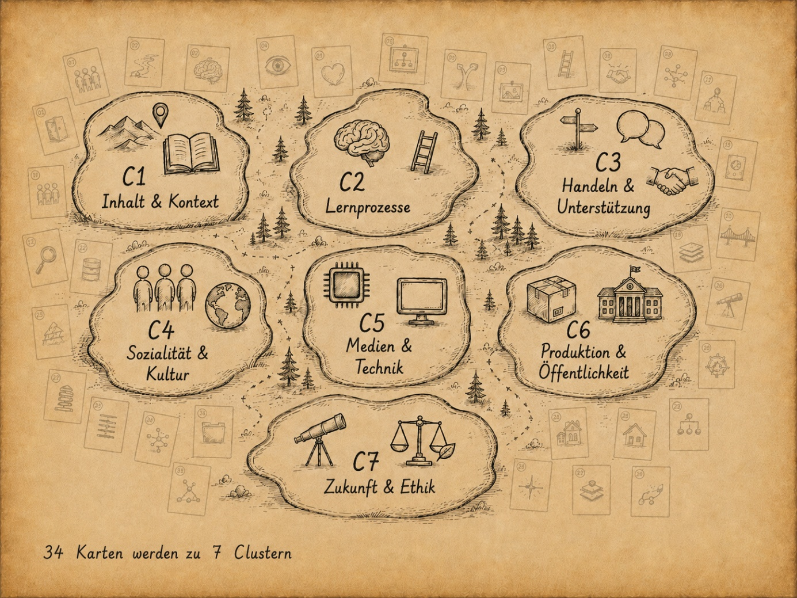
I check its proposal and see that it maps the "social level" into Cluster 4 — but I can't find a "digital level" anywhere. It has distributed the digital elements across several clusters. I look more carefully and notice that some clusters don't quite hold together. I start deconstructing the model. Over many rounds I dissolve clusters and redistribute the didactic levels into others. I tag some levels: [DIG] for a digitality connection, [A/D] for levels that work both analog and digital, and [FUT] for future-skills relevance.
I keep following this approach and start wondering how clusters might touch each other. How does GPT handle didactic levels that cut across other didactic levels? Those "partly cross-cutting" levels are what interest me now. I start calling them "cross-cutting dimensions."
Where Does Digitality Belong?
Over several turns I work through a sorting process — moving elements into other clusters, dissolving whole clusters, or forming new ones. The goal at this point is clusters that are coherent in content and function, with no overlaps and clear boundaries between them. Into Cluster "5 Media & Technology" I sort everything related to media, technology, and digital. But the devil is in the details. "Digital" keeps showing up in Cluster "1 Content & Context" and in Cluster "6 Production & Public Audience" too. Maybe "digitality" isn't a self-contained didactic level or cluster at all — maybe it's something else? Maybe it's a dimension that runs across all the clusters?
You:
Do we have a "digital level"?
GPT maps out my conceptual conflict by sketching digitality either as an isolated building block or as a cross-cutting beam running beneath the others. I reach for an image from the kitchen.
Is digitality a spice on the pizza or the flour in the dough?
It doesn't answer my prompt question directly — instead it lays out three options: once as a cross-cutting dimension, once as its own level, and once as its own cluster bundling «technology, media, data, ethics». How do I decide?
This is one of those moments where I can't say «right or wrong», «left or right», «A or B» — because I simply don't know (yet). I try to picture additional cross-cutting dimensions running parallel, side by side or on top of each other, and I realize my mental image of layers doesn't hold up. Digitality doesn't sit neatly at the bottom or the top — it cuts across multiple levels: media and technology, data and AI literacy, adaptive systems, and ethical reflection on technology. In the list it shows up through tags; in the model it stays cross-cutting.
So I stick with the cross-cutting dimension — and I suspect there are more like it. I also drop my original plan of having clusters that are clean, non-overlapping, and sharply separated.
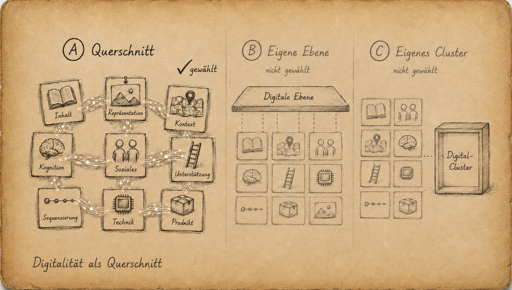
One Step Back for an Overview
The development keeps going. Turn by turn. Round by round. Question — answer. Proposal — pushback. This is not a linear, forward-only process between a person and an AI. And sometimes it goes one step back:
You:
Restore the two dissolved clusters 5 and 3.
A person would get annoyed. And GPT? It's perfectly calm and writes in its thinking lines: «adopting your suggestion after all…». I find myself wondering: «what does it mean by that?»
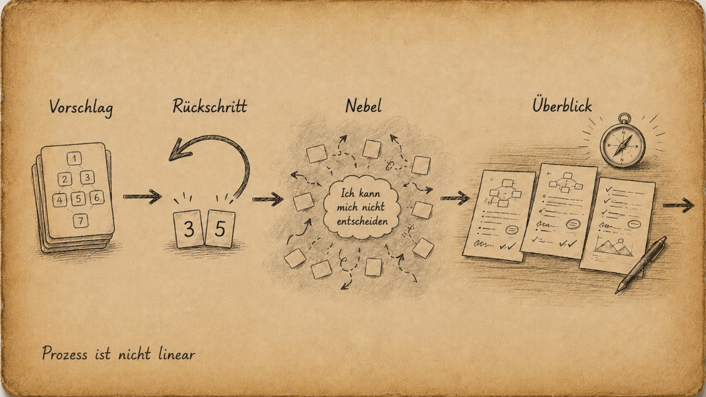
Today I'm just not making any progress. I've lost my bearings; the thread is gone. I'm standing in the middle of the forest and I no longer know which way is forward and which is back. And with every round, GPT keeps delivering more suggestions and options — exactly when what I need most is clarity and structure. Then comes the temporary surrender, the time-out, or simply….
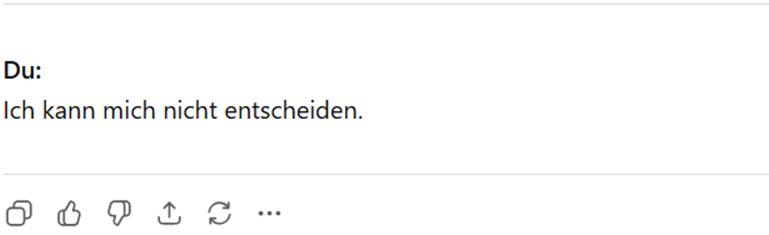
I need to take a step back. I need an overview. What's actually out there? Where does things stand right now? I want to start by mapping it out for myself. But immediately it occurs to me that AI can do that faster and more completely.
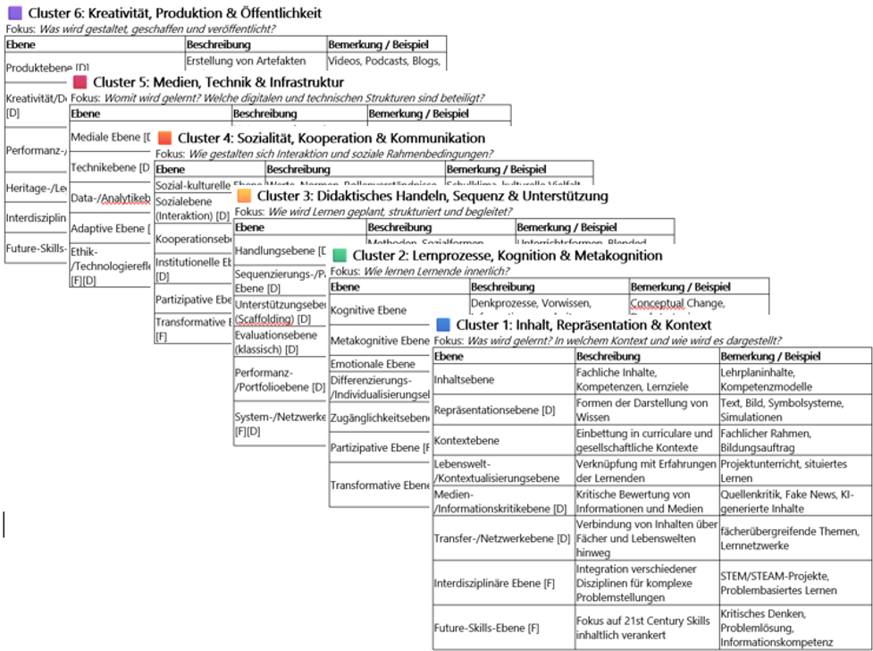
So I have GPT put together a current status of the work. I print it out and spread the three pages on the kitchen table. And when I see everything laid out in front of me, the fog lifts and the clarity comes back. I pick up a ballpoint pen and start making notes on the pages. Those three sheets become my companions for the next few days. At home, on the bus, on the train, at school — whenever a thought or an idea comes to me, I jot a quick note on the sheet and that's that.
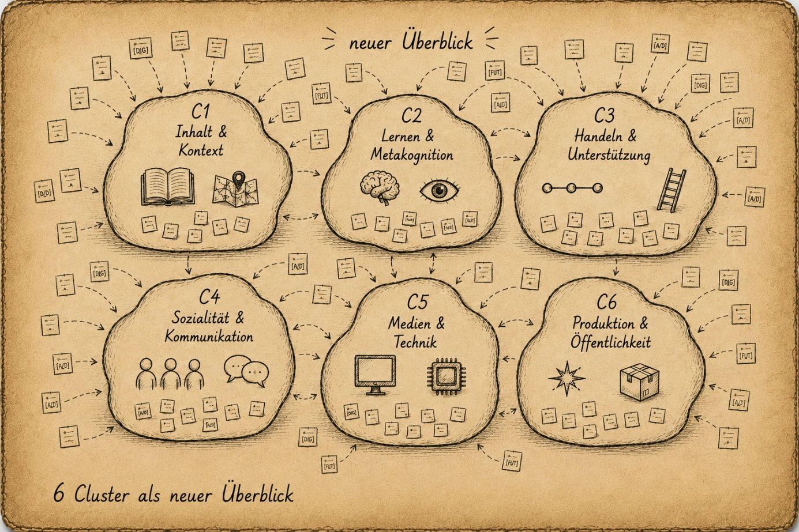
I make a brief attempt to organize the clusters with a second numbering level. After a few steps I realize: the system is getting too complicated. I move it to the archive.
GPT and Mistral Meet
Over the past few weeks I've been working on this project not just with GPT, but also with MISTRAL. Sometimes with the exact same prompts. Today I want to bring the two overviews together.
Same topic, same goal — and so MISTRAL also produced a full overview of didactic levels. Same question, different model, different answer. And a different structure. This isn't a test for a model ranking, and I'm not trying to figure out which one is right.
The only thing I care about is: "What from these two worlds will actually help me in the classroom later?" When two models organize similar questions differently, you can see where the structure is still unsettled. That's exactly why I put the MISTRAL version next to the GPT version. MISTRAL brings a model with five clusters, three cross-cutting dimensions, and several category tags. For my own working draft I don't take everything over one-to-one — instead I clarify the logic: the levels stay the working fields, the clusters organize those levels, the tags mark special connections, and the cross-cutting dimensions run across the levels.
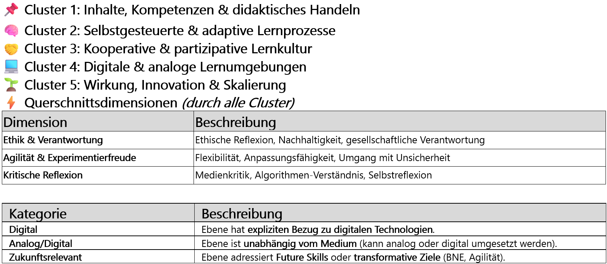
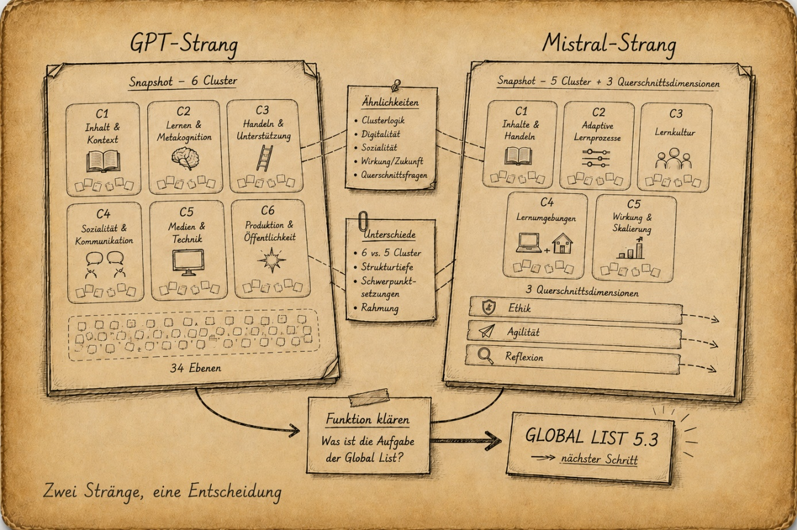
Now I have two versions — the MISTRAL version and the GPT version — and both look equally good. I can't judge which one works better for me in detail. So I need an outside perspective:
You:
I'd like critical, no-holds-barred feedback on this version.
I get a breakdown of strengths and critical points, and I compare the two versions. GPT also puts together a comparative analysis of both models and offers a brief recommendation: "Clarify the function, lighten Cluster 1, and operationalize the cross-cutting dimension." That's it. Statements like that don't resolve anything for me — but they show me what I have to decide myself. And I remind myself what this list is actually for. It's not meant to be a theoretical framework. It's an idea pool for a working list I'll build later.
That sets the direction, and my inner voice says: "Move forward, not deeper."
In the short time I've spent working with AI, I've learned that you can always go deeper. It's like entering a forest. Sometimes it's dense thicket, sometimes you get caught in the undergrowth, and sometimes you come across a clearing, a spring, or a crossroads.
I lay both threads side by side. What matters isn't the number of additional levels — it's which structure will actually help me work later. So I combine the usable parts of both versions into my own working draft.
For that draft I settle on six clusters with 38 entries drawn from 34 distinct didactic levels. Some levels appear in more than one cluster. On top of that come tags and four cross-cutting dimensions: Digitality, Ethics & Responsibility, Agility & Experimentation, and Critical Reflection.
The Global List Is Done
I'm not looking for a finished truth — I'm looking for an intermediate goal. Digitality doesn't stand as its own cluster; it runs through the whole thing as a cross-cutting dimension. This full overview becomes my «GLOBAL LIST».
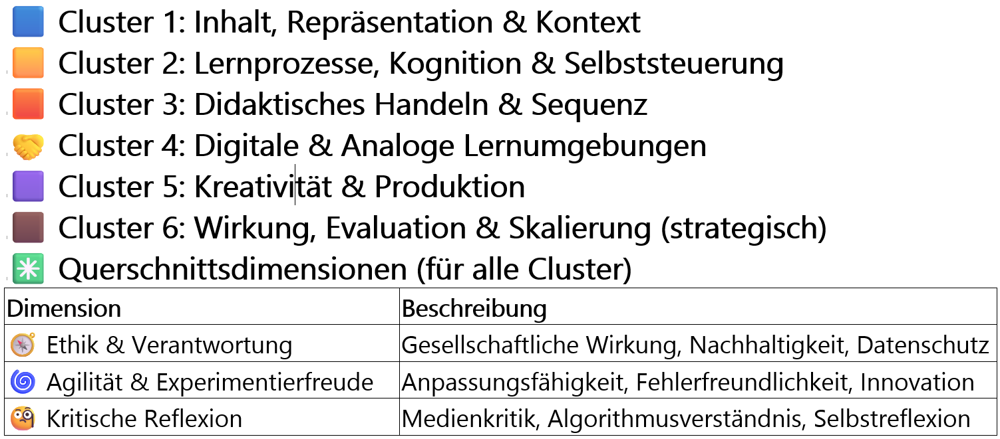
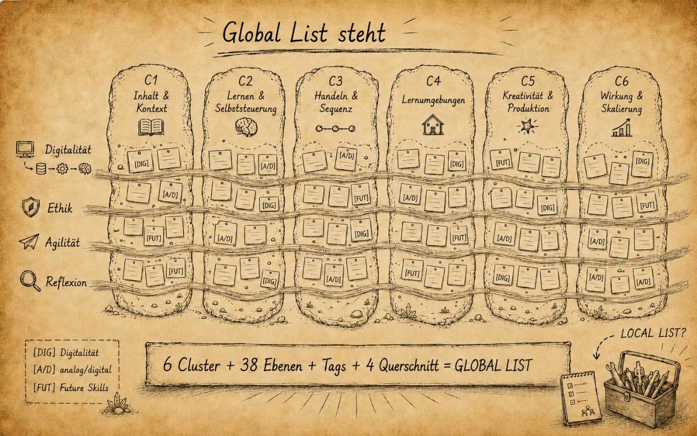
What I have with this final version isn't a mathematically complete truth — it's a workable draft. Big enough to map the forest, and still structured enough to cut a shorter classroom list from it. But for my classroom, it's definitely too big. Time for something manageable — a practical, short list. I'm calling it the «small list», or, slightly more technical, the «LOCAL LIST».
Which of the 34 distinct levels belong on my small list — and which ones do I actually want to use to differentiate my teaching going forward?
The forest has cleared. Now I need a template I can actually work with in the classroom.